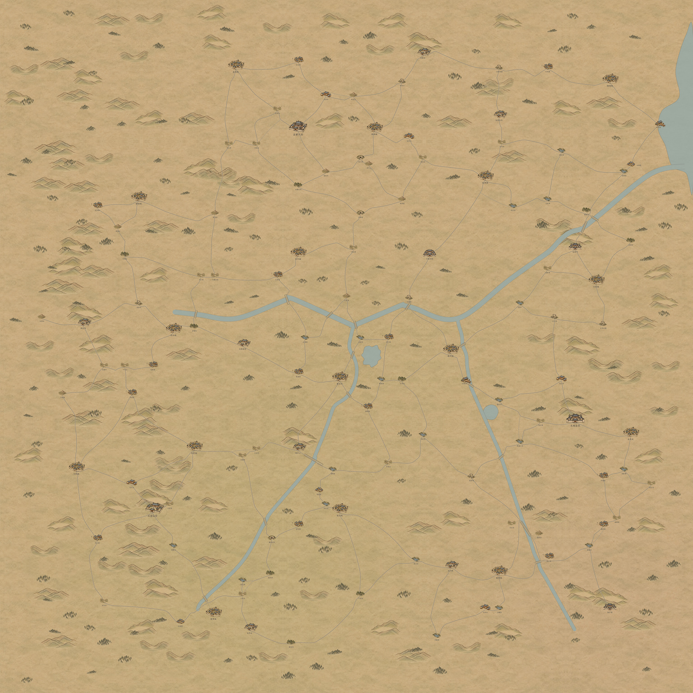

百川舆图 · 整套验收
游戏首页 → 试演与预览 → 百川九图 · 地图测试（固定倍率）。可拖动、用方向键浏览，也可从地点索引跳转；滚轮与捏合不会放大地图。
九张2048底图相接，123个具名地点。山门、平地聚落、岸边渡口分别落位；图标均按实际显示尺寸准备。以下地图保留原像素，可拖动查看。
此页为实机地图的静态导出，固定1∶1浏览；游戏内可分别开关道路、空节点与地点。缩略索引用于查找位置。
全图缩略索引

游戏内截图
全部地点检查
素材与验收记录 · 像素接缝记录 · 逐地点清单